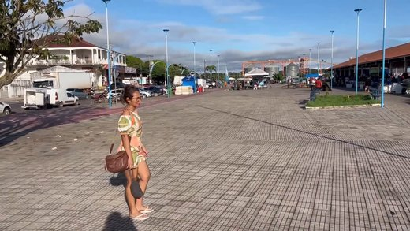

00:00:23.924
Mulher atravessa a área pavimentada junto à orla, com barcos à esquerda e o galpão da feira à direita.
Orla de Santarém, Santarém (PA) · confirmado
O apresentador anuncia a Feira do Pescado como primeira parada, antes de seguir ao Mercadão 2000.
Transcrição · 00:00:10 | 00:00:19 | 00:00:27
Turismo Aqui — quadro de vídeo publicado no YouTube